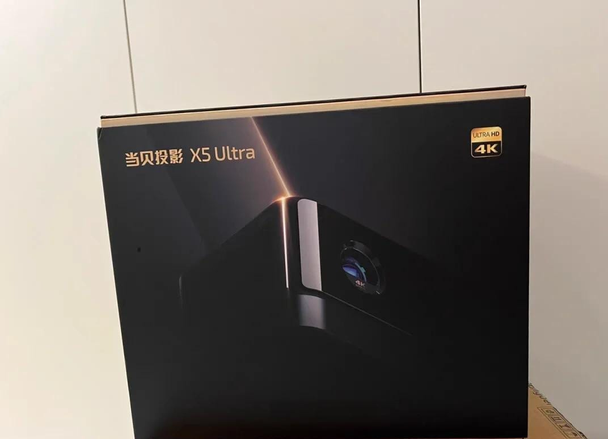

当贝 X5 Ultra

当贝旗舰激光投影，标称高亮度面向客厅不遮光场景，4K 画面与当贝 OS 的内容生态兼得，接口与配置齐全，适合想要白天也能看的大屏用户，高光冲击力强，家庭影音体验完整。
客观评测
当贝 X5 Ultra 采用激光光源，厂商标称亮度约 2450 CVIA 流明，4K 分辨率，配备 4GB 内存与 128GB 存储。实测亮度余量充足，白天半遮光环境下仍可正常观影，色彩表现浓郁，HDR 内容高光有冲击力。当贝 OS 内容聚合完善，语音搜索与自动校正功能成熟，接口覆盖 HDMI、USB 与网口。需要注意的是激光投影在浅色画面可能有轻微散斑感。
主观点评
买它就是为了「客厅不拉窗帘也能看」，事实证明它做到了：周末午后放个球赛，画面依旧清晰明亮。系统找片方便，喊一声就能搜到想看的电影，全家都会用。晚上关灯后画面的通透感更是加分项。价格确实不便宜，但一台顶过去两台的使用时段，对以投影为主力的家庭来说反而划算。
优点与不足
- 亮度充足，白天拉纱帘也能愉快观影
- 当贝 OS 内容聚合与语音助手体验成熟
- 接口齐全，扩展性强
- 激光散斑在浅色画面偶有可察觉
- 体积与噪音大于 LED 便携机型
- 旗舰定价门槛高
参数规格
| 光源 | 激光光源（ALPD 类方案），长寿命 |
|---|---|
| 亮度 | 约 2450 CVIA 流明（厂商标称） |
| 分辨率 | 3840×2160（4K） |
| 变焦 | 数码变焦，支持光学梯形校正 |
| 芯片 | 高端四核处理器，4GB + 128GB 存储 |
| 系统 | 当贝 OS，支持近场/远场语音 |
| 音响 | 双单元音响，支持 Dolby Audio 与 DTS |
| 校正 | 自动对焦、自动梯形校正、幕布对齐、避障 |
| 接口 | HDMI ×2、USB ×2、网口、光纤输出 |
| 功耗 | 约 180W（视亮度模式） |